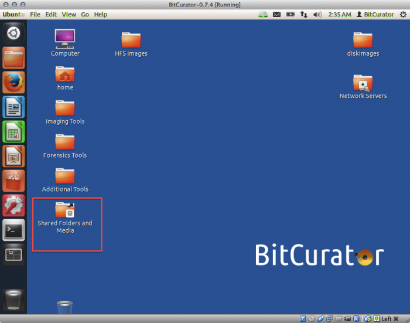
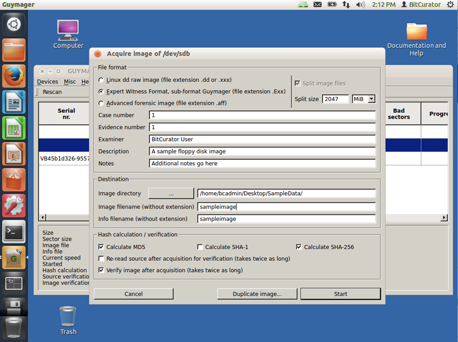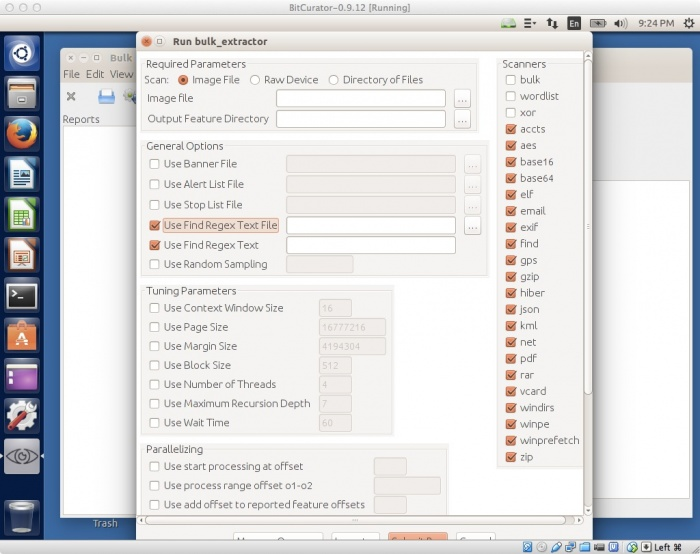
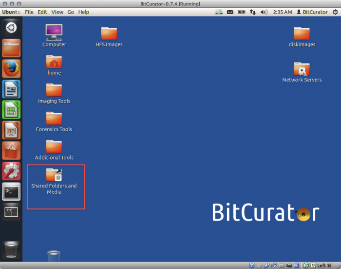
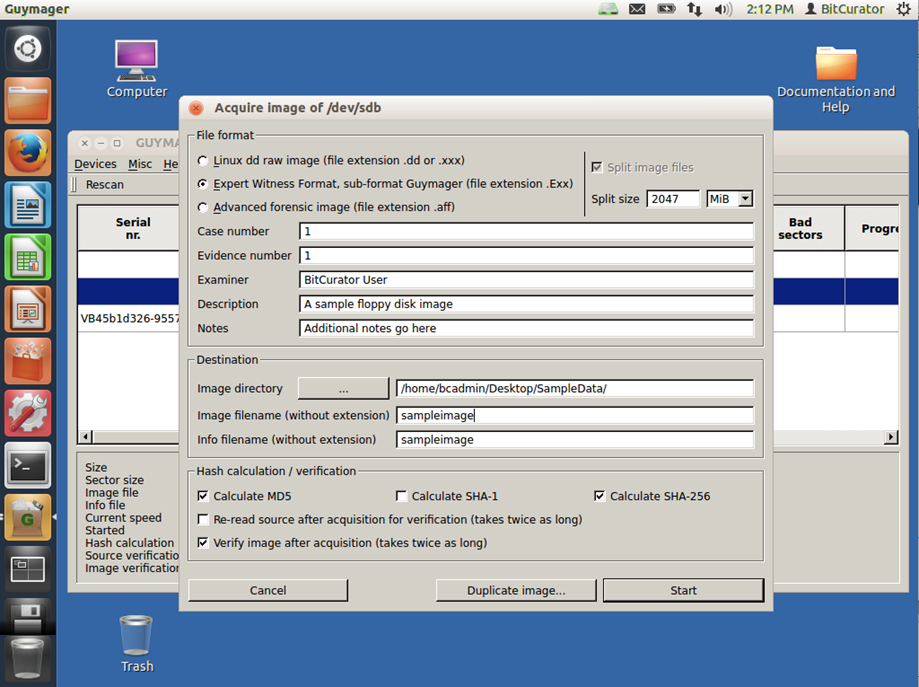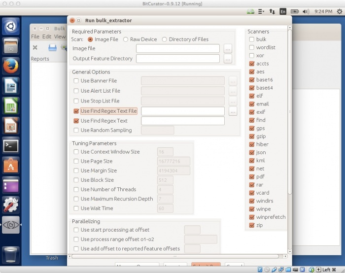
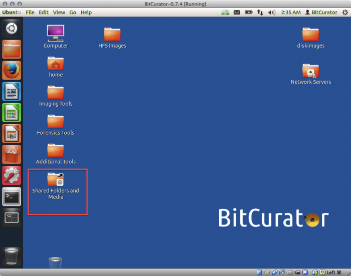
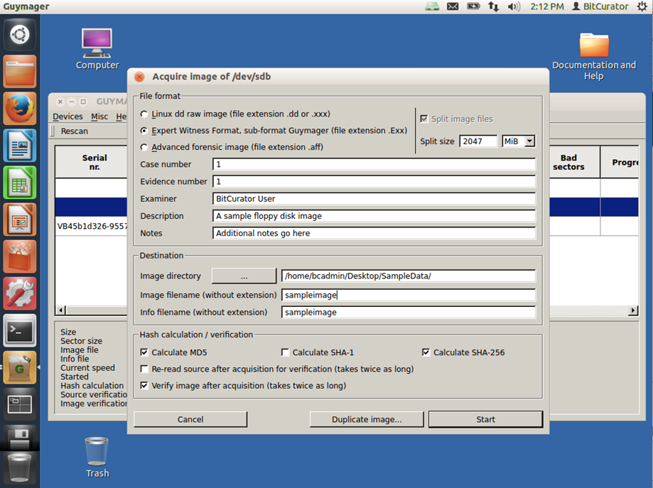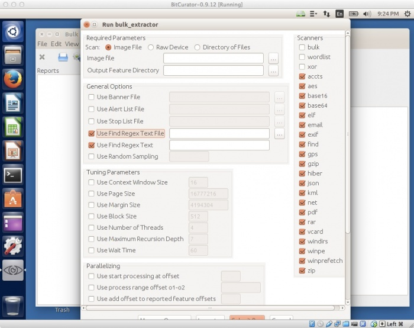
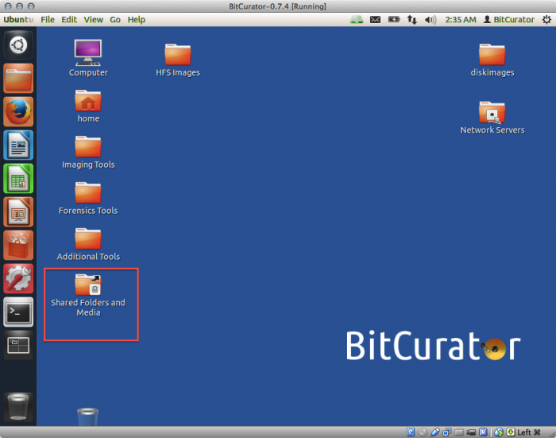
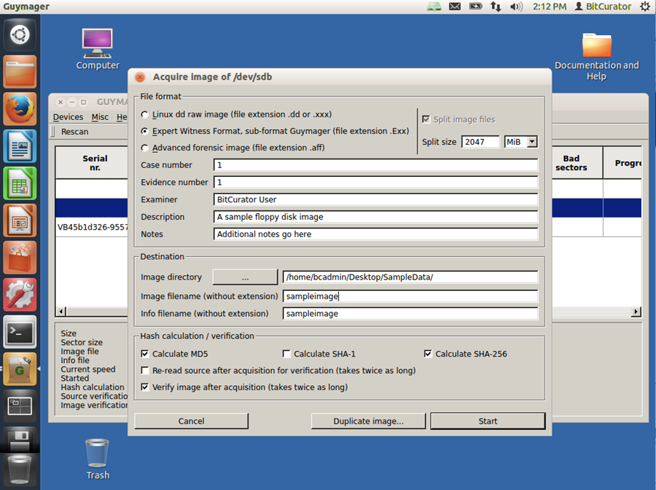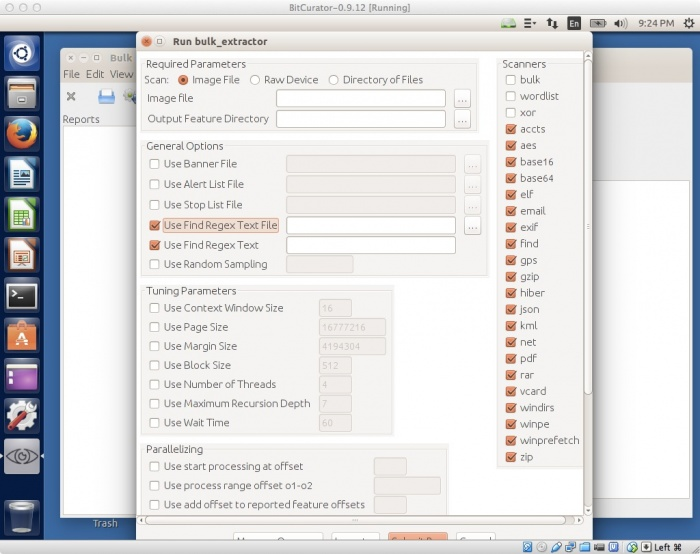
Digital records are a part of life: they’ve been around for thirty years, and aren’t going away any time soon. They are not just the future: they are the historical record, and they require accession, description, arrangement, and preservation just as much as paper records do. Archival methods of dealing with digital materials, however, are still evolving: as part of the Archival Enterprise II class, I collaborated with a group to install, use, evaluate, and demonstrate one of the software suites archivists are using to catch up and keep up with digital record production.
Our group worked with BitCurator, a custom distribution of Ubuntu Linux which brings together digital forensic tools, somewhat tweaked for archival applications, in a unified environment. Being the technical expert in the group, I assisted the other members with the practical matters: setting up the virtual environment (sticking with the free and open source theme, we used VirtualBox), getting the software downloaded, and creating virtualized BitCurator machines. We came together to write installation instructions, pointing out the technical issues we had each encountered and how to solve them, then broke off again to use the tools themselves and see what BitCurator could do.
Once we had the software running correctly, we split off to tackle individual facets of the project: the history of the tool, its development and applications; where it is used and why; what it does and how it does it. While my group members designed the history and use sections of our presentation, I took the role of creating walkthroughs and exercises, demonstrating common tasks which BitCurator facilitated and showing the tools in action. Rather than add more slides to the deck, I choose to create a series of short videos: an installation tutorial, a virtual tour of BitCurator, and a tool demonstration. I narrated the videos live, taking the class on an accelerated journey through the BitCurator landscape.
Since our assignment was to present a "technology demonstration," we decided to engage the class in a workshop, and I created the exercises and guides so that those who had successfully used our installation instructions (provided a week in advance) could do some hands-on learning. I found creating the exercise guides very satisfying; I like to learn new things, and preparing the guides beforehand helped me clarify my thinking about the tools before leading the workshop. In addition to providing guidance for the exercises, I did some troubleshooting and tech assistance, as well as a set of prepared exercise files on a flash drive for those who were able to follow along.
By imagining our project not as a presentation but as a more interactive, collaborative demonstration, we were able to engage the class and encourage them to think of digital records and the methods archivists (like us!) use to process them not as utterly different from the practices which they had already learned, but as translations and extensions of those practices. We brought the class in, letting them see and operate the tools we were talking about rather than simply describing them and hoping for the best. The result was a room full of people who knew a little more about archival software and were a little more confident with digital materials than they had been when they walked in the door.
We can’t all process medieval manuscripts, after all.